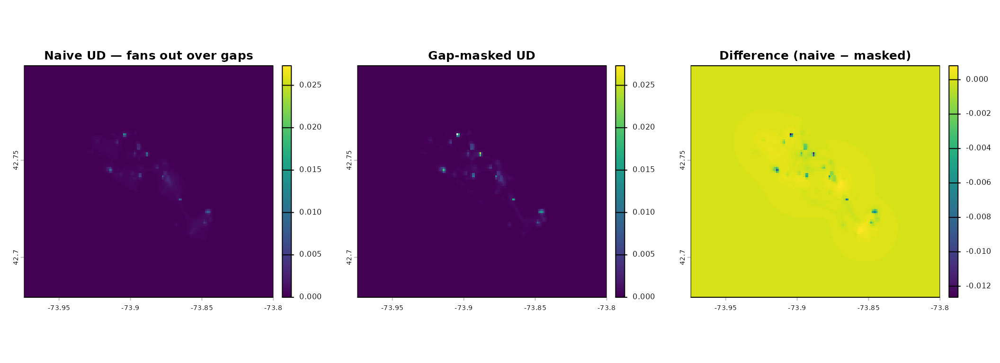

Gap-aware UDs: excluding long-gap segments from dBBMM/dBGB
Source:vignettes/UD_gap_aware_ud.Rmd
UD_gap_aware_ud.RmdWhen you fit a dBBMM (or a dBGB) on a track with long inter-fix gaps, you get a problem. The bridge between two fixes that are 12 hours apart is much wider than the bridge between two fixes 15 minutes apart — that’s by design, it reflects the fact that the animal had more time to wander between them. But when the animal was actually denning, sleeping in a burrow, or out of GPS view, it didn’t wander. The wide bridge spreads the UD across a region the animal never visited. The smear is a pure interpolation artefact driven by elapsed time, not by evidence of movement.
This vignette shows two ways to handle that:
-
Mask the long-gap segments (the simpler option,
when you just want one clean UD). You compute the variance object as
normal, then tell the UD step “ignore the bridges across these gap
segments” via
mt_mask_segments(). The UD comes out without the smear. -
Burst around the gaps (the right option when the
separate runs between gaps are themselves of interest, or when you want
to compare per-run dBGB direction). You make each run a separate
composite
track_idand let the multi-track dispatch produce one UD per run, following the idiom fromvignette("UD_bursted_uds", package = "move2utils").
(If you used the legacy move package, this is the modern
equivalent of setting interested = FALSE on the variance
object. The mask-based workflow does the same thing under the hood —
writing to the per-segment include-mask — just behind a single helper
that works identically on dBBMM and dBGB objects.)
The running example uses the fisher GPS data bundled with
move2 and a six-hour gap threshold, which roughly matches a
fisher’s denning duration and trips on 19 of Leroy’s 918 segments.
Setting up
library(move2)
library(dplyr)
library(sf)
library(terra)
library(units)
library(move2utils)
fishers <- mt_read(mt_example())
fishers <- fishers[!st_is_empty(fishers), ]
## focus on Leroy (M1). The dBBMM/dBGB functions auto-project internally
## and return the UD in the input CRS, so we pass this lon/lat track in as
## is (project with mt_aeqd_crs() first if you prefer a metric grid).
leroy <- filter_track_data(fishers, .track_id = "M1")
nrow(leroy)
#> [1] 919Inspecting the gap distribution
lag_hours <- as.numeric(set_units(mt_time_lags(leroy), "hour"))
summary(lag_hours)
#> Min. 1st Qu. Median Mean 3rd Qu. Max. NAs
#> 0.2211 0.2456 0.2506 0.5458 0.2575 16.2783 1
threshold_h <- 6
long_gap <- which(lag_hours > threshold_h)
length(long_gap)
#> [1] 19The last element of mt_time_lags() is NA
(no segment after the final location). Segments longer than the
threshold are the candidates for exclusion: their endpoints are widely
separated with no intermediate movement information, so the bridge is a
pure interpolation across territory that the animal may or may not have
crossed.
Approach A — mask long-gap segments
Fit the variance on the full track, so the surrounding dynamics are
estimated with their normal window context, then pass the long-gap
segment indices to mt_mask_segments(). The UD routine
respects the mask and simply skips those bridges.
var_full <- mt_dbbmm_variance(
leroy,
location_error = 25,
window_size = 31,
margin = 11
)
#> Input is in longitude/latitude. Auto-projecting to a local AEQD CRS for dynamic Brownian-bridge variance estimation; distances and variances are in metres.
var_masked <- mt_mask_segments(var_full, long_gap)
ud_smeared <- mt_dbbmm_ud(var_full, location_error = 25,
raster = 100, ext = 0.5, verbose = FALSE)
ud_clean <- mt_dbbmm_ud(var_masked, location_error = 25,
raster = 100, ext = 0.5, verbose = FALSE)
ud_diff <- ud_smeared - ud_clean
common_range <- range(c(terra::values(ud_smeared),
terra::values(ud_clean)), na.rm = TRUE)
par(mfrow = c(1, 3), mar = c(2, 2, 3, 4))
terra::plot(ud_smeared, range = common_range,
main = "Naive UD — fans out over gaps")
terra::plot(ud_clean, range = common_range,
main = "Gap-masked UD")
terra::plot(ud_diff, main = "Difference (naive − masked)")
Left: naive UD fits a bridge across every segment, including the 19 gaps longer than six hours, spreading probability over areas the animal never visited. Middle: long-gap bridges masked out with mt_mask_segments(); probability re-concentrates onto the true track. Right: difference (naive − masked) isolates the smear artefact — positive cells are the fake density the gap bridges deposited.
The difference panel is the key diagnostic: positive cells mark the probability mass that the long-gap bridges deposited in non-visited space — pure interpolation artefact that the mask removes. The same code, unchanged, applies to a dBGB variance object:
var_full_d <- mt_dbgb_variance(leroy, location_error = 25,
window_size = 31, margin = 11)
var_masked_d <- mt_mask_segments(var_full_d, long_gap)
ud_clean_d <- mt_dbgb_ud(var_masked_d, location_error = 25,
raster = 100, ext = 0.5)mt_mask_segments() dispatches on the object class and
writes to the appropriate include-mask. Multi-track variance lists are
supported too: passing the same long_gap vector broadcasts
it across all elements, or a named list of segment vectors applies a
per-track mask.
Approach B — burst around each gap
When the individual runs between gaps are the unit of analysis — e.g.
contrasting pre- and post-denning space use, treating each nightly foray
as its own UD, or pairing with a dBGB run-level directional summary —
wrap each run in its own composite track_id. Denning
segments then occupy their own (two-point) bursts that are dropped by
the window_size filter.
## burst_ix increments each time a long gap is crossed;
## a location is assigned to the burst that contains its arrival.
is_long_gap_in <- c(FALSE, head(lag_hours, -1) > threshold_h)
is_long_gap_in[is.na(is_long_gap_in)] <- FALSE
burst_ix <- cumsum(is_long_gap_in)
leroy_b <- leroy |>
mutate(
burst_id = sprintf("%s__run%02d", mt_track_id(leroy), burst_ix)
)
leroy_b <- mt_set_track_id(leroy_b, "burst_id")
## drop runs too short to fit the window;
## with window_size = 31 the minimum is 31, but 40 leaves a small margin.
min_run <- 40
short <- names(which(table(mt_track_id(leroy_b)) < min_run))
leroy_b <- leroy_b[!mt_track_id(leroy_b) %in% short, ]
table(mt_track_id(leroy_b))
#>
#> M1__run00 M1__run02 M1__run04 M1__run05 M1__run06 M1__run10 M1__run11 M1__run13
#> 60 51 46 132 40 47 112 48
#> M1__run14 M1__run16 M1__run17 M1__run18
#> 53 59 50 46
var_list <- mt_dbbmm_variance(
leroy_b,
location_error = 25,
window_size = 31,
margin = 11
)
## per-run UDs rastered on a common grid
stk <- mt_dbbmm_ud(var_list, location_error = 25, raster = 100, ext = 0.5)
names(stk)
terra::plot(stk)To collapse the per-run stack into a single “active-space” UD, weight each run by its duration and sum:
durations <- vapply(var_list, function(v) {
diff(range(v$track_data$time_mins)) # minutes
}, numeric(1))
w <- durations / sum(durations)
ud_active <- sum(stk * w)
ud_active <- ud_active / sum(terra::values(ud_active), na.rm = TRUE)
terra::plot(ud_active, main = "Duration-weighted active-space UD")Use a location-count weighting (number of locations per run) instead of duration when the time a run spans is confounded by sampling-rate changes.
The bursting idiom works identically for
mt_dbgb_variance() / mt_dbgb_ud(). dBGB is
particularly informative here: per-run parallel/perpendicular ratios
from mt_motion_variance() distinguish commuting-style runs
(parallel ≫ perpendicular) from foraging-style runs (parallel ≈
perpendicular), which is typically the reason one wants runs separated
rather than collapsed in the first place.
Choosing between approaches
- Approach A (mask). One holistic UD with bad segments excised. Cheapest: a single variance fit and a single UD rasterisation. The sliding window still spans the gap during variance estimation, so neighbouring per-location variance estimates remain mildly affected by the gap’s coordinates — a minor second-order effect, worth flagging when gaps are frequent.
- Approach B (burst). One independent variance fit per run, and therefore no cross-gap leakage in the variance estimates. More expensive, and requires deciding how to combine (or whether to combine) the per-run UDs. Worth it when runs themselves are the unit, or whenever gaps dominate the track enough that Approach A’s leakage becomes non-negligible.
For typical GPS tracks with a handful of overnight gaps, Approach A is the right first move. For tracks with many gaps, frequent denning, or a clear behavioural rhythm mapped onto gap/no-gap, Approach B is the more conservative default.
Further reading
-
vignette("UD_dbbmm_ud", package = "move2utils")— the Dynamic Brownian bridge UDs (dBBMM). -
vignette("UD_dbgb_ud", package = "move2utils")— the Directional UDs with the dynamic bivariate Gaussian bridge (dBGB). -
vignette("UD_bursted_uds", package = "move2utils")— producing dBBMM and dBGB UDs per behavioural or temporal segment per individual. -
vignette("UD_ud_comparison", package = "move2utils")— comparing UDs, stacking on a common grid, computing an overlap metric, and computing Earth-mover’s distance (EMD).